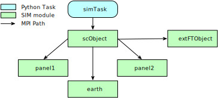
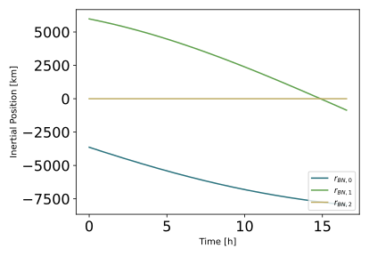
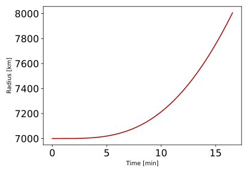
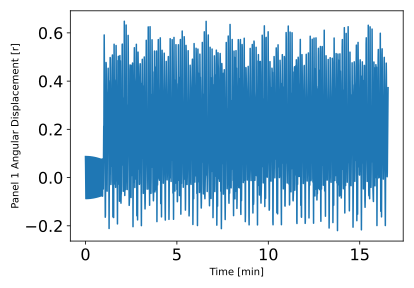
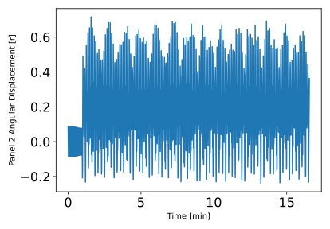

scenarioHingedRigidBody¶
Overview¶
This script sets up a 8-DOF spacecraft (3 translational, 3 rotational and 2 solar panel DOFs) which is orbiting Earth. It is nearly identical to the spacecraft which is demonstrated in scenarioOrbitManeuver. The purpose is to illustrate the use of the hinged rigid body module and illustrate the effects that a disturbance has on hinged rigid body motion. Read scenarioOrbitManeuver to learn how to setup a basic spacecraft with impulsive Delta-v maneuvers. The scenario in this tutorial is similar to scenarioOrbitManeuver except that the length of the simulation is shorter and a non-impulsive \(\Delta v\) is applied through the external force and torque module. The shortened length of the simulation execution means that the maneuvers don’t happen at the same point, so the effects of the maneuver are different than before. This scenario does not have multiple maneuver types, so nothing needs to be changed to run the scenario as was necessary in the orbit maneuvers tutorial
The script is found in the folder basilisk/examples and executed by using:
python3 scenarioBasicOrbit.py
The simulation layout is shown in the following illustration.
A single simulation process is created
which contains the spacecraft object and two hinged rigid bodies (panel1 and panel2).
It should be noted here that “hinged rigid bodies”
are rigid bodies which are hinged to the spacecraft hub by a single axis and they
can rotate only about
that axis and cannot translate. Details and graphics of the hinged rigid
body can be found in the hinged rigid body
documentation. Additionally, the spacecraft is orbiting earth, so a
simIncludeGravBody is created and called
earth. Finally, and external force is created and added to the spacecraft called extFTObject.
The BSK simulation is run for a fixed period. After stopping, the Module: extForceTorque module is given a non-zero external force value. When the simulation completes 4 plots are shown. One plot always shows the inertial position vector components, while the second shows a plot of the orbital radius time history. In addition, there is a plot for the angular displacement of each hinged rigid body. The plots are different because the hinged rigid bodies were attached to the spacecraft hub at logical starting positions, but the thrust is applied to the hub in a constant inertial direction which is insignificant to the hinged rigid bodies. Therefore, the force has asymmetrical effects on the hinged rigid bodies.
Rather than focusing only on how this simulation works, it may be more instructive to focus on the differences necessary to make this simulation work when adding the hinged rigid bodies to the spacecraft as well as the external force.
The simulation time step should be reduced. Previously, the time step was easily set to 10 seconds because only orbital dynamics were being modelled. As will be seen in the plots from this tutorial, though, the panels will “flap” at relatively high frequency. Large time steps would not allow for this motion to be solved for correctly. In fact, with the 10 second time step, the simulation will not even run. This is a good reminder to check the time step size when trouble-shooting Basilisk simulations.
Moving on, the orbit maneuver code must be changed to implement the finite thrusting maneuver rather than the impulse Delta-v used before.
Finally, the second and third orbit maneuvers have been removed from this tutorial. The intended demonstration is already complete, and the smaller time steps necessary here make it wasteful to simulate more than is necessary. Aside from these changes, other variables used in instantaneous \(\Delta v\) calculations have been removed.
Illustration of Simulation Results¶
The following images illustrate the expected simulation run returns for a range of script configurations.
show_plots = True
In this scenario something similar to a classical Hohmann transfer is being simulated to go from LEO to reach and stay at GEO, but with a finite thrusting time. The math behind such maneuvers can be found in textbooks such as Analytical Mechanics of Space Systems.
The hinged rigid bodies were given an initial angular displacement. Then, the externally applied force caused greater displacement. As discussed above, the reaction is asymmetric between the panels due to panel orientation. Another interesting result is that, during the thrusting maneuver, the hinged bodies oscillate about a non-zero point. This is because they are under a constant, non-zero acceleration, similar to a weight hanging from a spring on Earth.
